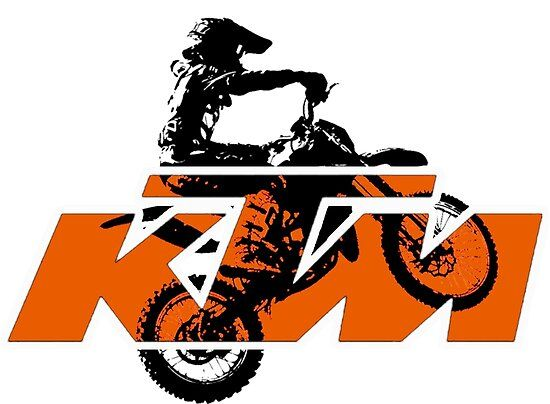

Наша работа
Моторы
Двигатель KTM 250 куб. См. Известен как самый мощный и конкурентоспособный двухтактный двигатель в мире. А теперь дела обстоят еще лучше. KTM 2018XC-W TPI 250 может похвастаться недавно разработанной и запатентованной системой впрыска топлива TPI (впрыск через передаточный канал) - поистине уникальной особенностью, когда речь идет о двухтактных гоночных велосипедах. Запатентованная система EFI с двумя инжекторами в передаточных отверстиях цилиндра делает двигатель более плавным и значительно снижает расход топлива, что кардинально меняет правила игры с точки зрения технологий.
Подвеска
В широком списке оборудования KTM 1290 Super Adventure особое место занимает инновационная система полу-активного шасси, разработанная компанией WP. С ее помощью можно легко и быстро изменять настройки вилки и амортизатора, выбирая переключателем на руле соответствующие режимы: «Комфорт», «Улица», «Спорт» или «Оффроад».
Электронный контроллер полуактивной подвески занимается адаптацией ее характеристик к выбранному режиму и дорожной поверхности прямо во время движения. Необходимые для этого данные поступают от датчиков хода подвески и акселерометров в передней и задней части мотоцикла. Также при регулировке подвески используются определенные карты характеристик, хранящиеся в системе.
Подвеска WP Semi-Active непрерывно отслеживает изменение качества дорожной поверхности – неровности и выбоины на асфальте и бездорожье. Измеряется не только ход, но и скорость сжатия пружины. Чем выше эти значения, тем более жестко подвеска ответно реагирует. Блок управления регулирует демпфирование вилки и заднего амортизатора, открывая и закрывая гидравлические клапаны.
Эффект от работы полуактивной подвески 1290 Super Adventure наиболее заметен в комфортном режиме, в котором базовая настройка подвески довольно мягкая и управляемые клапаны переключаются в режим жесткого демпфирования, реагируя только на действительно грубую поверхность. В спортивном режиме, пропускная способность клапанов уменьшается и базовая настройка за счет этого получается несколько жестче.